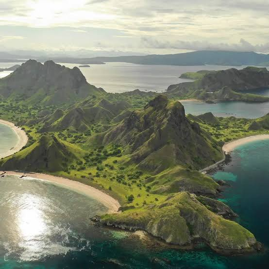

Bajoverse membantu Anda merencanakan, memesan, dan memahami Labuan Bajo — dari izin masuk Taman Nasional Komodo sampai operator kapal yang benar-benar terverifikasi.

Enam halaman inti Bajoverse — tiap fitur berdiri sebagai halaman sendiri.
Filter destinasi by aktivitas, lihat semua pulau dalam satu peta.
Info lengkap tiap pulau + etika kunjungan + ulasan wisatawan.
Susun itinerary harian, terintegrasi status izin & cuaca.
Bandingkan kapal & pemandu terverifikasi berdasar harga dan rating.
Etika kunjungan taman nasional, kontak darurat, tips lokal.
Titik masuk yang merangkum semua fitur di atas.
Klik untuk lihat detail lengkap tiap pulau.